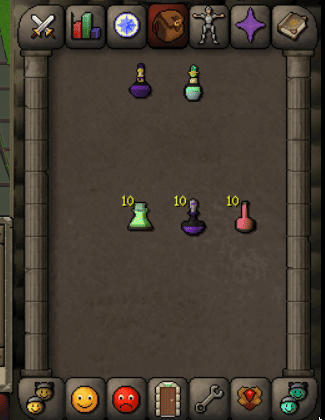
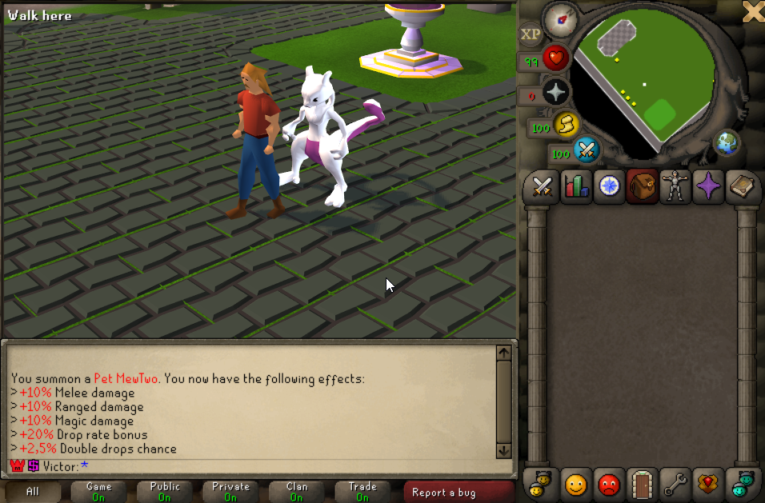
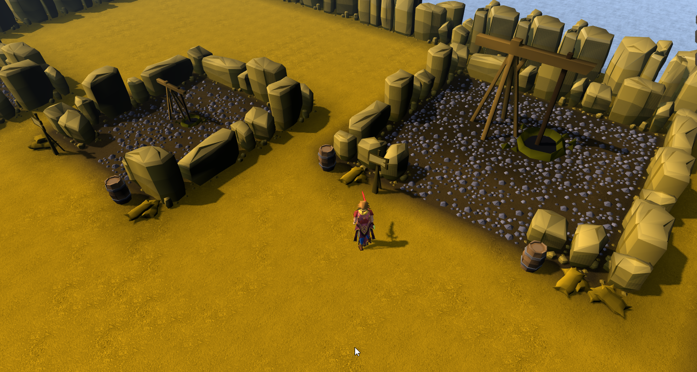
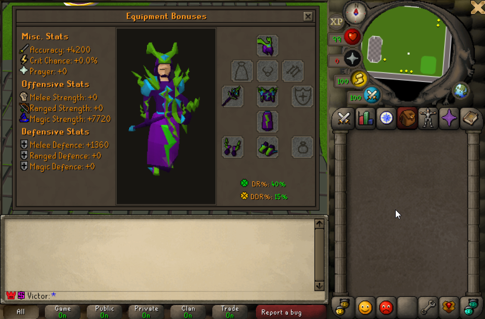
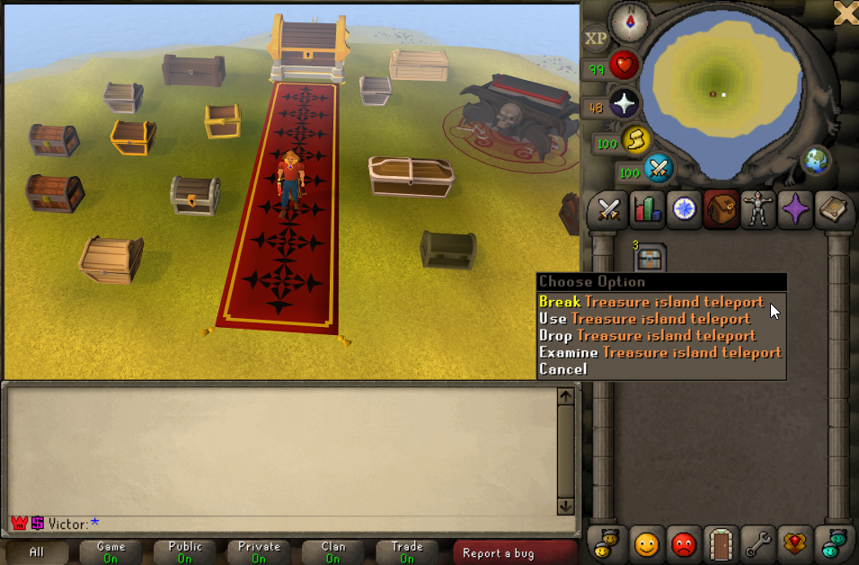
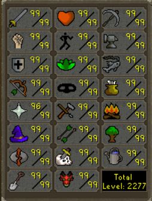
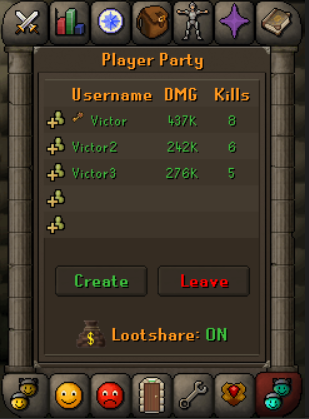

Custom Potions

Custom potion functionality designed to expand combat preparation and give players additional gameplay options.
PROJECT SHOWCASE
A collection of custom systems, gameplay mechanics, quality-of-life improvements, and unique content developed for RSPS Revolution.
FEATURES & SYSTEMS
Explore the systems and custom features that shape the gameplay experience.

Custom potion functionality designed to expand combat preparation and give players additional gameplay options.
A Pokédex-inspired interface for browsing and discovering information about creatures in the game.
An enhanced banking interface for managing items and improving the player's inventory management experience.
An expanded prayer system that introduces additional abilities and combat customization.
Party functionality that helps players coordinate and participate in group gameplay.
An equipment progression system that gives players a way to upgrade gear and pursue stronger equipment.
A quality-of-life inventory feature that allows supported food items to stack, reducing inventory clutter.
An in-game store interface for browsing available items and accessing the game's shop features.
An exchange system built around Lucky Coins, providing another way for players to interact with game rewards and currencies.
Custom boss encounters that add combat challenges and new targets for players to take on.

A pet-related effects system that expands the functionality of pets and their role in the game.

An archaeology feature built to introduce an additional gameplay activity centered around exploration and discovery.

Customized combat statistics and damage calculations designed to support the project's combat balance and gameplay mechanics.
Fairy Queen content featuring a unique encounter or gameplay experience within the game.

A custom island area designed to expand the world and provide additional exploration opportunities.
A themed zone inspired by Super Mario, bringing a playful environment and a distinct change of pace to the game.

Custom skill content that extends the game's progression possibilities beyond its standard skill set.
A battle pass progression system that presents players with a structured path for earning rewards.
A cosmetic customization system that allows supported appearances to be changed independently of equipment stats.

A loot-sharing feature intended to support item distribution during group activities and cooperative encounters.